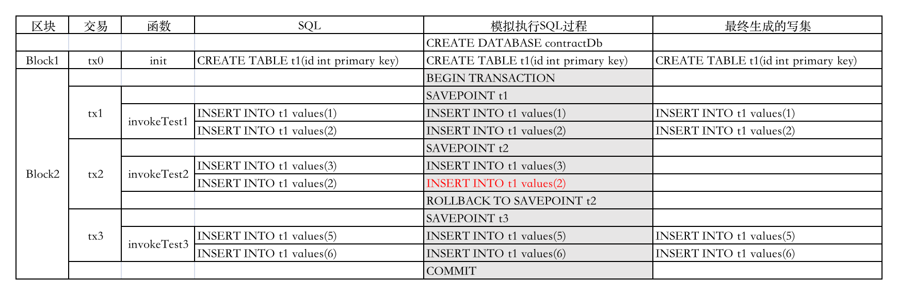

13. SQL合约支持¶
13.1. 概述¶
长安链支持在智能合约中直接编写SQL语句，对状态数据库（必须配置为关系数据库类型，比如MySQL）进行操作。
13.2. SQL合约的处理逻辑¶
在长安链SQL合约中，SQL语句按功能的不同，被分为三种：
DDL数据结构定义的语句，包括对表（TABLE）、视图（VIEW）和索引（INDEX）的创建（CREATE）、修改（ALTER）、删除（DROP）等操作。另外清空表内容（TRUNCATE TABLE）也是属于DDL语句。
DML数据管理语句，包括增加（INSERT）、删除（DELETE）和修改（UPDATE）三种。
DQL也就是各种SELECT查询语句，只读，不产生数据更改。
13.2.1. 合约创建¶
用户合约在创建时，系统会自动创建一个新的数据库给该合约，所以不同的用户合约的状态数据以数据库进行区隔。在创建合约对应的数据库后，系统会执行合约init_contract函数中的SQL语句，由于包含DDL语句，而DDL语句是非数据库事务的，所以出于安全起见，一个创建合约的交易或升级合约的交易将会被单独打包到区块中，不能与其他普通合约调用的交易一起打包。
13.2.2. 合约调用¶
用户在合约中拼接SQL语句，并以字符串形式传入合约SDK，在合约执行时，由于无法像KV数据那样生成读写集，然后基于读写集判断一个区块中的多笔交易是否允许并行执行还是串行执行，所以在支持SQL合约的执行过程中，将全部按串行方式执行。一个区块对应一个数据库中的事务，区块开始处理第一笔交易时开启事务，然后针对每一笔交易，在交易执行前将建立事务的SavePoint保存点，然后再逐步执行交易中的多条SQL语句，如果全部SQL语句执行完成，并交易结果返回成功，那么将会把所有DML语句记录到写集中（SELECT语句不产生数据变更，不记录到写集），并建立一个新的事务SavePoint，继续处理下一笔交易。但一旦该交易中有SQL语句执行失败，或者最终该交易的结果返回为失败，则回滚到上一个SavePoint，并清空该交易的读写集。直到处理完本区块的最后一笔交易，提交整个数据库事务，每个合约对其状态数据库的更改落盘完成。以下为一个合约的多笔Invoke交易被打包到一个区块后的执行过程和结果示例：  最终在打包区块2后，我们查询合约的状态数据库，可以看到：
| t1 |
|---|
| 1 |
| 2 |
| 5 |
| 6 |
13.2.3. 合约查询¶
当用户通过Query语句调用合约的查询函数时，查询函数内部拼接DQL，并直接将DQL传入对应的数据库，查询后返回结果给用户。查询函数中不得使用DDL或DML语句，只能使用DQL语句。
13.2.4. 合约升级¶
合约升级时将调用新合约中的upgrade函数，该函数中用户可以定义对数据库进行更改的DDL或者对现有数据进行更新的DML。合约升级交易由于包含DDL，所以也必须要单独出块，不能和其他普通合约调用交易一起混合打包。
13.3. SQL合约的编写规范¶
建表、索引、视图等DDL语句只能在合约安装init_contract 和合约升级upgrade中使用，暂不支持用户自定义函数、存储过程、触发器等。
SQL中，禁止跨数据库操作，无需指定数据库名。比如select * from db.table 是禁止的； use db;是禁止的。
SQL中，禁止使用事务相关操作的语句，比如commit 、rollback等，事务由ChainMaker框架自动控制。
SQL中，禁止使用随机数、获得系统时间等不确定性函数，这些函数在不同节点产生的结果会不一样。
SQL中，禁止多条SQL拼接成一个SQL字符串传入。
在建表时，禁止使用自增Sequence做主键，需由合约外控制生成主键。
禁止操作（包括建立、修改、删除、查询、写入）表名为“state_infos”的表，这是系统自带的提供KV数据存储的表，用于存放PutState函数对应的数据，其中的数据通过PutState和GetState操作。
禁止DCL语句，如GRANT，REVOKE等 注意： 1、发送交易为query交易时，只能执行DQL语句，不可执行DML语句。若含有则会报错。 2、在一个交易中，若执行了多条语句（DQL、DML），其中一条或多条语句（DQL、DML）执行失败，则整个交易将执行失败并会回滚到上一个savePoint
13.4. SQL合约的使用¶
13.4.1. 节点状态数据库配置¶
默认情况下，长安链只支持KV数据的合约操作，也就是常见的PutState、GetState操作，如果调用合约框架中的Sql函数，则合约会报错。如果希望合约支持SQL操作，首先需要确保每个节点的状态数据库为SQL数据库类型。节点配置示例如下：
chainmaker.yml
storage:
store_path: ../data/org1/ledgerData1
blockdb_config:
provider: leveldb
leveldb_config:
store_path: ../data/org1/blocks
statedb_config:
provider: sql #状态数据库为SQL数据库
sqldb_config:
sqldb_type: mysql #具体数据库类型为mysql
dsn: root:password@tcp(127.0.0.1:3306)/dbname #mysql连接字符串
historydb_config:
provider: leveldb
leveldb_config:
store_path: ../data/org1/history
resultdb_config:
provider: leveldb
leveldb_config:
store_path: ../data/org1/result
disable_contract_eventdb: true #是否禁止合约事件存储功能，默认为true，如果设置为false,需要配置mysql
13.4.2. 链配置中启用SQL合约¶
在确保每个节点的状态数据库为SQL数据库后，需要在链配置中修改合约的enable_sql_support为true。当然也可以在创世区块配置中，直接启用SQL合约支持。
bc1.yml
contract:
enable_sql_support: true
13.4.3. SQL合约SDK接口¶
13.4.3.1. Golang¶
// 接口定义
type SqlSimContext interface {
// ExecuteQueryOne 返回第一行数据
ExecuteQueryOne(sql string) (*EasyCodec, ResultCode)
// ExecuteQuery 返回结果集游标
ExecuteQuery(sql string) (ResultSet, ResultCode)
// ExecuteUpdate 执行更新、删除、插入语句，返回影响行数和错误码
ExecuteUpdate(sql string) (int32, ResultCode)
// ExecuteDdl 执行创建、删除表等语句，返回错误码
ExecuteDdl(sql string) (int32, ResultCode)
}
// 结果集游标
type ResultSet interface {
// 返回下一行数据
NextRow() (*EasyCodec, ResultCode)
// 返回是否有下一行
HasNext() bool
// 关闭
Close() (bool, ResultCode)
}
使用接口方式
ctx := NewSqlSimContext()
ctx.ExecuteDdl(sql)
ctx.ExecuteUpdate(sql)
rs:=ctx.ExecuteQuery(sql)
for rs.HasNext() {
ec, _ := NextRow()
ctx.log(ec.ToJson())
}
rs.Close()
13.4.3.2. Rust¶
pub trait SqlSimContext {
// execute_query_one 返回第一行数据
fn execute_query_one(&self, sql: &str) -> Result<EasyCodec, result_code>;
// execute_query 返回结果集游标
fn execute_query(&self, sql: &str) -> Result<ResultSet, result_code>;
// execute_update 执行更新、删除、插入语句，返回影响行数
fn execute_update(&self, sql: &str) -> Result<i32, result_code>;
// execute_ddl 执行创建、删除表等语句，返回错误码
fn execute_ddl(&self, sql: &str) -> Result<i32, result_code>;
}
impl<'a> ResultSet<'a> {
// 返回下一行数据
pub fn next_row(&self) -> Result<EasyCodec, result_code>
// 返回是否有下一行
pub fn has_next(&self) -> bool
// 关闭
pub fn close(&self) -> bool
}
使用接口方式
let ctx = sim_context::get_sql_sim_context();
ctx.execute_ddl(sql);
ctx.execute_update(sql);
ctx.execute_query_one(sql);
let rs = ctx.execute_query(sql);
while rs.has_next() {
let ec = rs.next_row().unwrap();
ctx.log(&ec.to_json());
}
rs.close();
13.5. 合约示例¶
13.5.1. Golang合约示例¶
package main
import (
"strconv"
)
//安装合约时会执行此方法，必须
//export init_contract
func initContract() {
ctx := NewSqlSimContext()
ctx.Log("init_contract [start]")
// create teacher
sqlCreateTeacher := `create table teacher_gasm (
id varchar(128) primary key,
name varchar(64) DEFAULT ''
)
`
ctx.Log(sqlCreateTeacher)
_, resultCode := ctx.ExecuteDdl(sqlCreateTeacher)
if resultCode != SUCCESS {
msg := "initContract error. resultCode=" + strconv.Itoa(int(resultCode)) + " sqlCreateTeacher=" + sqlCreateTeacher
ctx.Log(msg)
ctx.ErrorResult(msg)
return
} else {
ctx.Log("create table teacher_gasm success.")
}
// create student
sqlCreateStudent := `create table student_gasm (
id varchar(128) primary key,
teacher_id varchar(128),
name varchar(64) DEFAULT '',
age int DEFAULT 0,
score int DEFAULT 0,
id_card_no varchar(19) DEFAULT '',
attend_school_time date
)
`
ctx.Log(sqlCreateStudent)
_, resultCode = ctx.ExecuteDdl(sqlCreateStudent)
if resultCode != SUCCESS {
msg := "initContract error. resultCode=" + strconv.Itoa(int(resultCode)) + " sqlCreateStudent=" + sqlCreateStudent
ctx.Log(msg)
ctx.ErrorResult(msg)
return
} else {
ctx.Log("create table student_gasm success.")
}
ctx.SuccessResult("create table student、teacher_gasm success")
ctx.Log("initContract success.")
ctx.Log("init_contract [end]")
}
// 升级合约时会执行此方法，必须
//export upgrade
func upgrade() {
ctx := NewSqlSimContext()
ctx.Log("upgrade [start]")
sqlAddColumn := "ALTER TABLE student_gasm ADD address varchar(255) NULL"
ctx.Log(sqlAddColumn)
_, resultCode := ctx.ExecuteDdl(sqlAddColumn)
if resultCode != SUCCESS {
msg := "upgrade error."
ctx.Log(msg)
ctx.ErrorResult(msg)
} else {
ctx.Log("upgrade success.")
ctx.SuccessResult("upgrade success.")
}
ctx.Log("upgrade [end]")
}
//export sql_insert
func sqlInsert() {
ctx := NewSqlSimContext()
ctx.Log("sql_insert [start]")
id, _ := ctx.Arg("id")
age, _ := ctx.Arg("age")
name, _ := ctx.Arg("name")
idCardNo, _ := ctx.Arg("id_card_no")
if len(id) == 0 || len(age) == 0 {
ctx.Log("param id/age is required")
ctx.ErrorResult("param id/age is required")
return
}
// insert fmt.Sprintf("insert into student_gasm(id, name, age, id_card_no) VALUES ('%s', '%s', '%s', '%s')", id, name, age, idCardNo)
sqlInsert := "insert into student_gasm(id, name, age, id_card_no) VALUES ('" + id + "', '" + name + "', '" + age + "', '" + idCardNo + "')"
ctx.Log("sql_insert [sql]" + sqlInsert)
rowCount, resultCode := ctx.ExecuteUpdate(sqlInsert)
if resultCode != SUCCESS {
ctx.Log("sql_insert error")
ctx.ErrorResult("sql_insert error")
return
} else {
msg := "sql_insert update row=" + strconv.Itoa(int(rowCount))
ctx.Log(msg)
}
ctx.SuccessResult("ok")
ctx.Log("sql_insert [end] ok")
}
//export sql_query_by_id
func sqlQueryById() {
ctx := NewSqlSimContext()
ctx.Log("sql_query_by_id [start]")
id, _ := ctx.Arg("id")
if len(id) == 0 {
ctx.Log("param id is required")
ctx.ErrorResult("param id is required")
return
}
sqlQuery := "select id, name, age, id_card_no from student_gasm where id='" + id + "'"
ctx.Log(sqlQuery)
ec, resultCode := ctx.ExecuteQueryOne(sqlQuery)
if resultCode != SUCCESS {
ctx.Log("ExecuteQueryOne error")
ctx.ErrorResult("ExecuteQueryOne error")
return
}
jsonStr := ec.ToJson()
ctx.Log("sql_query_by_id ok result:" + jsonStr)
ctx.SuccessResult(jsonStr)
ctx.Log("sql_query_by_id [end]")
}
//export sql_query_range_of_age
func sqlQueryRangeOfAge() {
ctx := NewSqlSimContext()
ctx.Log("sql_query_range_of_age [start]")
maxAge, _ := ctx.Arg("max_age")
minAge, _ := ctx.Arg("min_age")
if len(maxAge) == 0 || len(minAge) == 0 {
ctx.Log("param max_age/min_age is required")
ctx.ErrorResult("param max_age/min_age is required")
return
}
sqlQuery := "select id, name, age, id_card_no from student_gasm where age>" + minAge + " and age<" + maxAge
ctx.Log(sqlQuery)
resultSet, resultCode := ctx.ExecuteQuery(sqlQuery)
if resultCode != SUCCESS {
ctx.Log("ExecuteQuery error")
ctx.ErrorResult("ExecuteQuery error")
return
}
var result string
for resultSet.HasNext() {
ec, resultCode := resultSet.NextRow()
if resultCode != SUCCESS {
ctx.Log("NextRow error")
ctx.ErrorResult("NextRow error")
return
}
jsonStr := ec.ToJson()
ctx.Log("NextRow: " + jsonStr)
result += jsonStr
}
resultSet.Close()
ctx.SuccessResult(result)
ctx.Log("sql_query_range_of_age [end]")
}
//export sql_update
func sqlUpdate() {
ctx := NewSqlSimContext()
ctx.Log("sql_update [start]")
name, _ := ctx.Arg("name")
// insert
sqlInsert := "update student_gasm set name='" + name + "' "
ctx.Log(sqlInsert)
rowCount, resultCode := ctx.ExecuteUpdate(sqlInsert)
if resultCode != SUCCESS {
ctx.Log("ExecuteUpdateSingle error")
ctx.ErrorResult("ExecuteUpdateSingle error")
return
} else {
msg := "ExecuteUpdateSingle update row=" + strconv.Itoa(int(rowCount))
ctx.Log(msg)
}
ctx.SuccessResult("ok")
ctx.Log("sql_update [end]")
}
//export sql_update_rollback_save_point
func sqlUpdateRollbackSavePoint() {
ctx := NewSqlSimContext()
ctx.Log("sql_update_rollback_save_point [start]")
name, _ := ctx.Arg("name")
txId, _ := ctx.GetTxId()
// insert
sqlUpdate := "update student_gasm set name='" + name + "'"
sqlInsert := "insert into student_gasm(id, name, age, id_card_no) VALUES ('" + txId + "', 'Tom', '18', '409787417841395')"
ctx.Log(sqlInsert)
ctx.Log(sqlUpdate)
rowCount, resultCode := ctx.ExecuteUpdate(sqlUpdate)
ctx.ExecuteUpdate(sqlInsert)
if resultCode != SUCCESS {
ctx.Log("ExecuteUpdateSingle error")
ctx.ErrorResult("ExecuteUpdateSingle error")
return
} else {
msg := "ExecuteUpdateSingle update row=" + strconv.Itoa(int(rowCount))
ctx.Log(msg)
}
ctx.SuccessResult("ok")
ctx.Log("sql_update_rollback_save_point [end]")
}
//export sql_delete
func sqlDelete() {
ctx := NewSqlSimContext()
ctx.Log("sql_delete [start]")
id, _ := ctx.Arg("id")
// insert
sqlInsert := "delete from student_gasm where id='" + id + "'"
ctx.Log(sqlInsert)
rowCount, resultCode := ctx.ExecuteUpdate(sqlInsert)
if resultCode != SUCCESS {
ctx.Log("ExecuteUpdateSingle error")
ctx.ErrorResult("ExecuteUpdateSingle error")
return
} else {
msg := "ExecuteUpdateSingle update row=" + strconv.Itoa(int(rowCount))
ctx.Log(msg)
}
ctx.SuccessResult("ok")
ctx.Log("sql_delete [end]")
}
//export sql_cross_call
func sqlCrossCall() {
ctx := NewSqlSimContext()
ctx.Log("sql_cross_call [start]")
contractName, _ := ctx.Arg("contract_name")
minAge, _ := ctx.Arg("min_age")
maxAge, _ := ctx.Arg("max_age")
if len(contractName) == 0 {
contractName = "contract01"
}
if len(minAge) == 0 {
minAge = "0"
}
if len(maxAge) == 0 {
maxAge = "20"
}
param := map[string]string{
"min_age": minAge,
"max_age": maxAge,
}
result, code := ctx.CallContract(contractName, "sql_query_range_of_age", param)
if code != SUCCESS {
ctx.Log("contract inner call contract fail.")
ctx.ErrorResult("contract inner call contract fail.")
return
}
ctx.Log(string(result))
ctx.SuccessResultByte(result)
ctx.Log("sql_cross_call [end]")
}
func main() {
}
13.5.2. Rust合约示例¶
use crate::{easycodec, sim_context, sim_context_rs};
use easycodec::EasyCodec;
use sim_context_rs::SqlSimContext;
// 安装合约时会执行此方法，必须
#[no_mangle]
pub extern "C" fn init_contract() {
let ctx = sim_context::get_sql_sim_context();
// create teacher
let sql_create_teacher = "create table teacher (
id varchar(128) primary key,
name varchar(64) DEFAULT ''
)";
let r = ctx.execute_ddl(sql_create_teacher);
match r {
Err(_) => {
let msg = "initContract error. create table teacher error";
ctx.log(msg);
ctx.error(msg);
return;
}
_ => {
ctx.log("create table teacher success.");
}
}
// create student
let sql_create_student = "create table student (
id varchar(128) primary key,
teacher_id varchar(128),
name varchar(64) DEFAULT '',
age int DEFAULT 0,
score int DEFAULT 0,
id_card_no varchar(19) DEFAULT '',
attend_school_time date
)";
let r = ctx.execute_ddl(sql_create_student);
match r {
Err(_) => {
let msg = "initContract error. create table student error";
ctx.log(msg);
ctx.error(msg);
return;
}
_ => {
ctx.log("create table student success.");
}
}
ctx.ok("create table student、teacher success".as_bytes());
ctx.log("initContract success.");
}
// 升级合约时会执行此方法，必须
#[no_mangle]
pub extern "C" fn upgrade() {
let ctx = sim_context::get_sql_sim_context();
let sql_add_column = "ALTER TABLE student ADD address varchar(255)";
let r = ctx.execute_ddl(sql_add_column);
if r.is_err() {
ctx.log("upgrade error.");
ctx.error("upgrade error.");
} else {
ctx.log("upgrade success.");
ctx.ok("upgrade success.".as_bytes());
}
}
#[no_mangle]
pub extern "C" fn sql_insert() {
let ctx = sim_context::get_sql_sim_context();
let id = ctx.arg_default_blank("id");
let age = ctx.arg_default_blank("age");
let name = ctx.arg_default_blank("name");
let id_card_no = ctx.arg_default_blank("id_card_no");
if id.len() == 0 || age.len() == 0 {
ctx.log("param id/age is required");
ctx.error("param id/age is required");
return;
}
// insert
let sql_insert = format!(
"insert into student(id, name, age, id_card_no) VALUES ({:?}, {:?}, {:?}, {:?})",
id, name, age, id_card_no
);
ctx.log("sql_insert");
ctx.log(&sql_insert);
let r = ctx.execute_update(&sql_insert);
if r.is_err() {
ctx.log("execute_update_single error. ");
ctx.error("execute_update_single error. ");
return;
}
ctx.log("execute_update_single ok");
ctx.ok("ok".as_bytes());
}
#[no_mangle]
pub extern "C" fn sql_query_by_id() {
sim_context::log("sql_query_by_id");
let ctx = sim_context::get_sql_sim_context();
let id = ctx.arg_default_blank("id");
if id.len() == 0 {
ctx.log("param id is required");
ctx.error("param id is required");
return;
}
let mut msg = "sql_query_by_id id:".to_string();
msg.push_str(&id);
ctx.log(&msg);
let sql_query = format!(
"select id, name, age, id_card_no from student where id={:?}",
id
);
let r = ctx.execute_query_one(&sql_query);
if r.is_err() {
ctx.log("execute_query error. ");
ctx.error("execute_query error. ");
return;
}
let ec = r.unwrap();
let mut msg = "sql_query_by_id ok result:".to_string();
msg.push_str(&ec.to_json());
ctx.log(&msg);
ctx.ok(ec.to_json().as_bytes());
}
#[no_mangle]
pub extern "C" fn sql_query_range_of_age() {
sim_context::log("sql_query_range_of_age");
let ctx = sim_context::get_sql_sim_context();
let max_age = ctx.arg_default_blank("max_age");
let min_age = ctx.arg_default_blank("min_age");
if max_age.len() == 0 || min_age.len() == 0 {
ctx.log("param max_age/min_age is required");
ctx.error("param max_age/min_age is required");
return;
}
let sql_query = format!(
"select id, name, age, id_card_no from student where age>{:?} and age<{:?}",
min_age, max_age
);
let r = ctx.execute_query(&sql_query);
if r.is_err() {
ctx.log("execute_query error. ");
ctx.error("execute_query error. ");
return;
}
let result_set = r.unwrap();
let mut result = "".to_string();
while result_set.has_next() {
let ec = result_set.next_row().unwrap();
ctx.log(&ec.to_json());
result.push_str(ec.to_json().as_str());
}
result_set.close();
ctx.log("sql_query_range_of_age ok ");
ctx.ok(result.as_bytes());
}
#[no_mangle]
pub extern "C" fn sql_update() {
let ctx = sim_context::get_sql_sim_context();
let name = ctx.arg_default_blank("name");
// insert
let sql_insert = format!("update student set name={:?} ", name);
let r = ctx.execute_update(&sql_insert);
if r.is_err() {
ctx.log("execute_update_single error. ");
ctx.error("execute_update_single error. ");
return;
} else {
ctx.log("execute_update_single success. ");
}
ctx.log("sql_update ok");
ctx.ok("ok".as_bytes());
}
#[no_mangle]
pub extern "C" fn sql_update_rollback_save_point() {
let ctx = sim_context::get_sql_sim_context();
let name = ctx.arg_default_blank("name");
let tx_id = ctx.get_tx_id();
// insert
let sql_insert = format!("update student set name={:?} ", name);
ctx.log(&sql_insert);
let r = ctx.execute_update(&sql_insert);
let sql_insert = format!("insert into student(id, name, age, id_card_no) VALUES ({:?}, 'Tom', '18', '409787417841395')", tx_id);
ctx.log(&sql_insert);
let r = ctx.execute_update(&sql_insert);
if r.is_err() {
ctx.log("execute_update_single error. ");
ctx.error("execute_update_single error. ");
return;
} else {
ctx.log("execute_update_single success. ");
}
ctx.log("sql_update ok");
ctx.error("save point test");
}
#[no_mangle]
pub extern "C" fn sql_delete() {
let ctx = sim_context::get_sql_sim_context();
let id = ctx.arg_default_blank("id");
// insert
let sql_delete = format!("delete from student where id={:?}", id);
let r = ctx.execute_update(&sql_delete);
if r.is_err() {
ctx.log("execute_update_single error. ");
ctx.error("execute_update_single error. ");
return;
} else {
ctx.log("execute_update_single success. ");
}
ctx.log("sql_delete ok");
ctx.ok("ok".as_bytes());
}
#[no_mangle]
pub extern "C" fn sql_cross_call() {
let ctx = sim_context::get_sql_sim_context();
let mut contract_name = ctx.arg_default_blank("contract_name");
let mut min_age = ctx.arg_default_blank("min_age");
let mut max_age = ctx.arg_default_blank("max_age");
if contract_name.len() == 0 {
contract_name = "contract01".to_string();
}
if min_age.len() == 0 {
min_age = "0".to_string();
}
if max_age.len() == 0 {
max_age = "20".to_string();
}
let mut ec = EasyCodec::new();
ec.add_string("min_age", &min_age);
ec.add_string("max_age", &max_age);
let r = ctx.call_contract(&contract_name, "sql_query_range_of_age", ec);
if r.is_err() {
ctx.log("【error】 sql_cross_call sql_query_range_of_age contract");
ctx.error("!!!!!!!!!!!!!!!!!!!test fail.!!!!!!!!!!!!!!!!!!!");
return;
} else {
ctx.log("【success】 sql_cross_call sql_query_range_of_age contract");
}
let result = r.unwrap();
let fact_str = std::str::from_utf8(&result).unwrap();
ctx.log(&format!(
" call contract find_by_file_hash result={:?}",
fact_str
));
ctx.ok(fact_str.as_bytes());
}